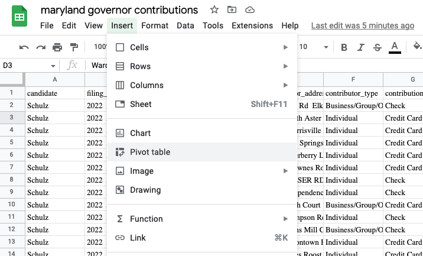
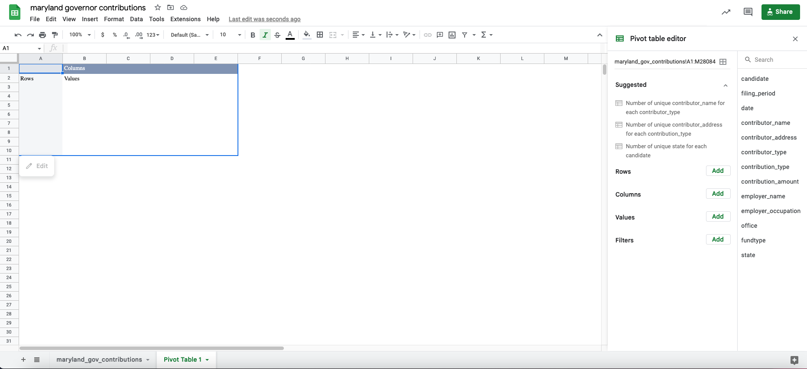
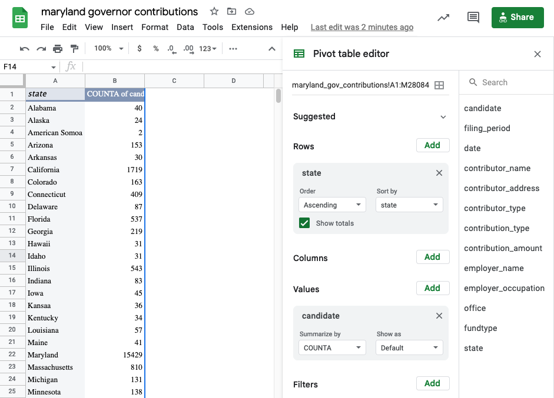
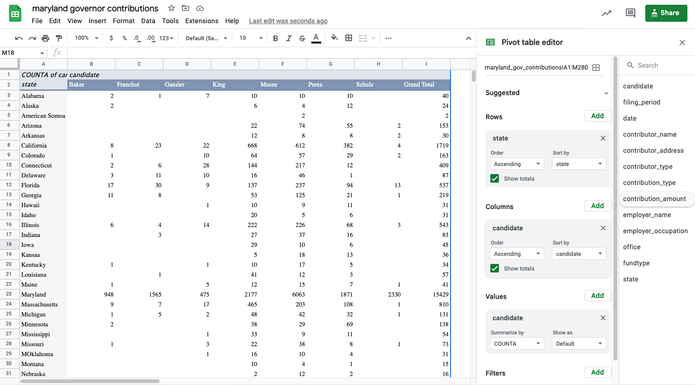
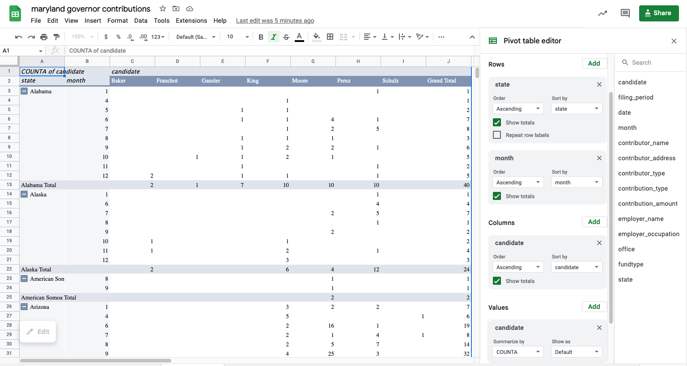

Grouping with pivot tables
To get totals for out of state contributions to Maryland’s 2022 gubernatorial primary candidates, Stephen Neukam downloaded data from the State Board of Elections for Wes Moore and other candidates. Make a copy of this Google Sheet so we can work with that data.
Neukam’s story is about out-of-state contributions:
Moore, a U.S. Army veteran and bestselling author, built a campaign war chest that included over $2.3 million in out-of-state contributions. Tom Perez, a former leader of the Democratic National Committee, raised nearly $1.7 million in donations from outside Maryland.
John B. King, former secretary of Education under President Barack Obama, raised $2.2 million in campaign funding last year. Only 11%, just under $240,000, came from Maryland donors. King raised over $534,000 in New York alone.
Summarizing a list of items in a spreadsheet is done using pivot tables. In other languages, it’s considered “aggregating” or “grouping and summarizing”. Think of pivot tables and grouping as answering the questions, “How many?” and “How much?”. They are particularly powerful when your question also has the words “the most” or the “the least” or “of each”. Some examples:
- Which Zip Code had the most crimes?
- What month had the least total rainfall?
- How much did each candidate raise last quarter?
- In playing cards, how many of each suit do I have in my hand?
- On average, are Merrill students taller or shorter than in other schools?
Confusing grouping with sorting or arranging
Many reporters confuse this summarization with “sorting”. One reason is that this is how we express the concept in plain language: “I want to sort Skittles by color”.
But in data analysis, sorting and and grouping are very different things. Sorting involves shuffling a table’s rows into some order based on the values in a column. In other languages, this is called arranging or ordering, much clearer concepts. Grouping, which is what pivot tables do, is a path to aggregating and computing summary statistics such as a count (the number of items), sum (how much they add up to), or average for category. It means “make piles and compute statistics for each one.”
When to use filter vs. pivot tables
Something that trips up beginners is a desire to see details and totals at the same time, which is more difficult than it sounds.
A filter is used to display your selected items as a list. You’ll get to see all of the detail and every column. As a convenience, Excel shows you how many items are in that filtered list. That’s great when you want to just look at them, or get more information about them. For instance, if you had a list of crimes by ZIP code, you might just want to see the list in your neighborhood – where, exactly, were they? When did they happen? Was it at night or the morning? What crimes happened on which blocks?
A pivot table is used when you just want to see summaries – does my ZIP code have more crime than others? Are robberies more common than car theft in my Zip code, and how does that compare to others?
In practice, you’ll go back and forth between summary and detail. They’re both important, just different.
Tutorial
Setting up the pivot table
Start with your cursor somewhere in your data , and choose Insert, then Pivot table. Then hit the Create button.

If all goes well, it will look like your data disappeared. It didn’t – you’re just on a new page. Here’s what it looks like:

Counting , or “how many”?
The section on the right gives you an outline of what to do. The section on the left will get filled in as you make your pivot table. If you want to see the number of contributions by state, drag the state column into the “Rows” area, then drag something that’s always filled out into the Values area (candidate is a safe one in this data).
 ### More variables {.unnumbered}
Suppose you’d like to see the number of contributions by candidate, with the candidates across the top and the state down the sides. Drag the candidate variable into the column area . Sorting can get hinky on pivot tables, but in this case it will work to put the largest number on top. This won’t work with percentages – it still sorts by the underlying number.

Even more variables
Say you wanted to see each candidate’s total number of contributions by month and state.
This isn’t always easy to organize. It means you’d need to have a pivot table with TWO columns down the side, and one across the top. Here’s my attempt at getting there:

This is after some fiddling with the formats, and I still can’t sort properly. We can’t sort by the combination of month and state.
Your choices here are limited: Copy and paste the values of the pivot table into a new sheet and sort there, or create a new variable by concatenating the name of the month and state into one column.
FAQ
Everything disappeared!
If you select something outside of that pivot table on the left, the menu on the right disappears. Select something in the pivot table area and it will likely come back.
I have too many columns
If you want two sets of statistics – say, number of contributions and percent of contributions – across the top, it can get very wide and confusing very quickly. One alternative is to change it into more of a vertical rectangle by dragging the “Values” element from the columns to the rows on the right. (This only shows up when you have two calculations being made.)
Things aren’t adding up
You have to be super careful about which column you use to Count things – it has to always be filled out (there can’t be any blanks). Go through the filters and find one that doesn’t have (Blanks) at the bottom to be sure.
Its a crazy number!
You might have dragged a numeric column into the “Values” area. Check to see if it says “Count” or “Sum”. Change it to “Count” if it has something else on it, unless you wanted to add up that column.
This is so frustrating - I can’t get what I want
Right? It’s time to go to a programming language!